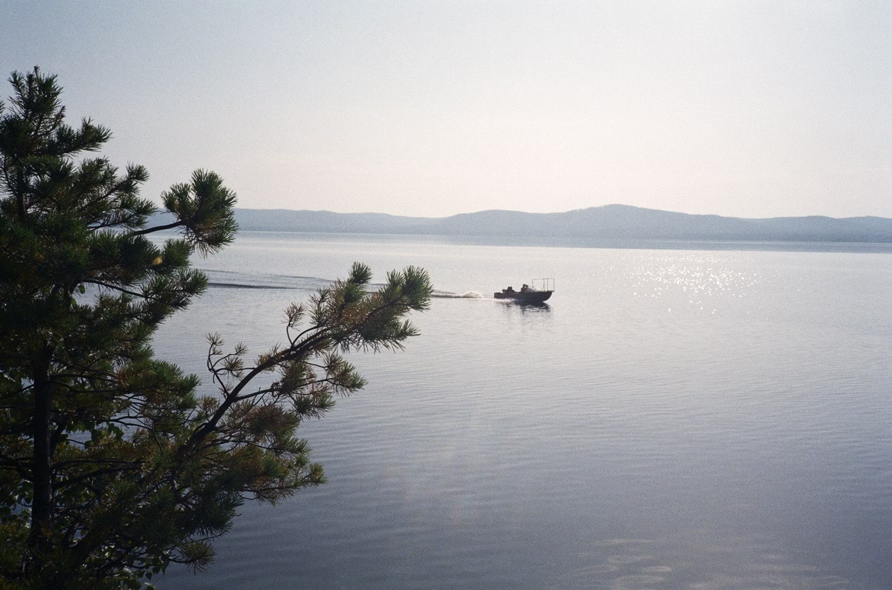

Water based Activities
Water-based activities all take place on Lochquarry itself.
link -check more activitiesKayaking

Have a go at paddling, rolling and rafting in one of our brand new kayaks. Max group size 8. Ages 8+
Canoeing

Work single-handedly or in pairs to canoe the length of Lochquarry. You can even take a picnic with you and explore some of the Loch islands. Max group size 8 boats (up to 16 people). Ages 6+
Powerboating
Take control of one of the Centre’s two RIBs out on Lochquarry and try your hand powerboating. Max group size 6. Ages 12+
Customer Review
Thank you to all the staff who worked so hard, in awful weather, to make sure that all the pupils had an amazing experience’ − Mrs Kahn, Hillend Primary School